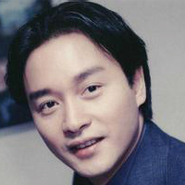
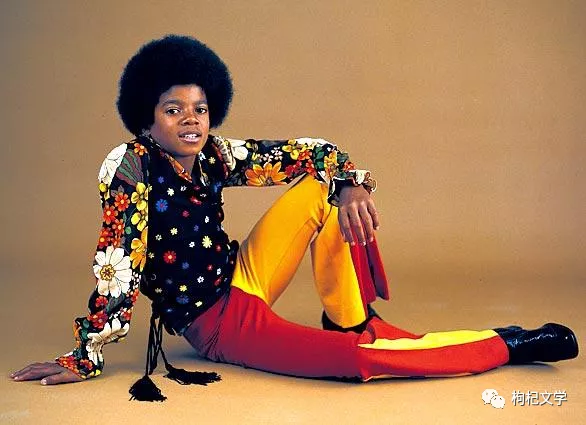
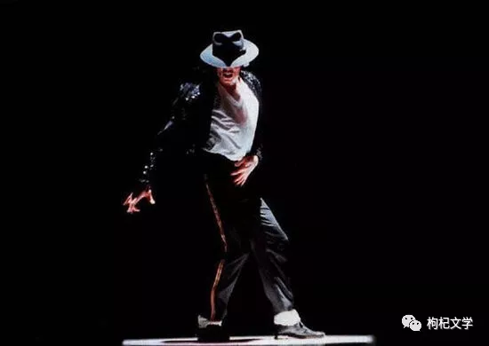
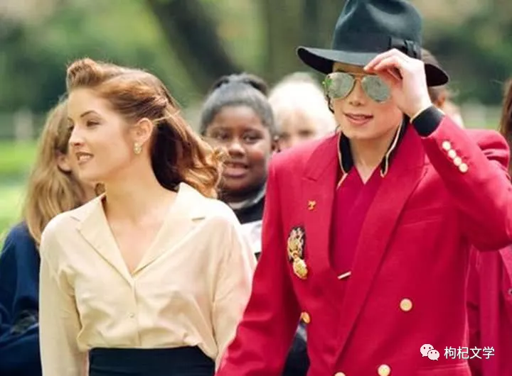
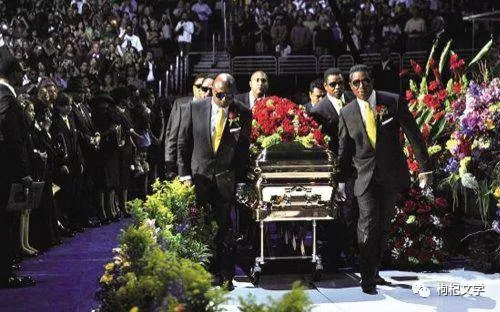
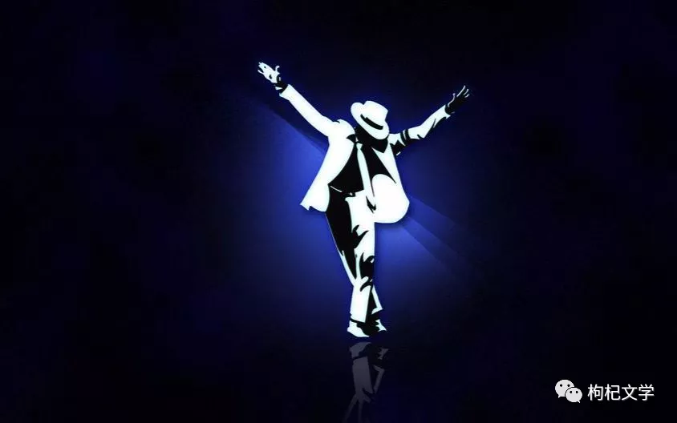

【人物栏目】| 谁丑化了迈克尔杰克逊

枸杞文学 时间：2022/2/11 阅读：65
杰克逊：一直被模仿，从未被超越！ 
迈克尔杰克逊，这个不止是影响了一代人的音乐天才，给我们带来了一次又一次的震撼表演，他对世界音乐的贡献，已经超出了常人所能想象地步。在此，我们一起来怀念这位已逝的传奇！当初的迈克尔·杰克逊用自己的童年换来了如今的成就，值得吗？熟悉迈克尔杰克逊的朋友都知道他是年少成名的，对于现今有很多明星梦的人都认为年少成名是好事，但是对于迈克尔杰克逊来说这真的不是一件好事，因为年少成名他付出了很大的代价，基本是失去了整个童年，正因为如此他的童年全部充斥这工作和演出，而且还是高强度的，放在今天大人都不一定受得了，何谈孩子。

迈克尔杰克逊的爸爸乔.杰克逊生前曾一手将自己的子女们培植成“杰克逊五宝”及“流行乐之王”、“世界舞王”迈克尔.杰克逊与"西洋天后"珍娜.杰克逊等世界明星。迈克尔杰克逊在5岁的时候就和哥哥们组成了“杰克逊五兄弟”的乐队，每天都要参加大大小小的演出，等到他开始上学的时候时间就更紧张了，迈克尔杰克逊不仅白天要到学校上学晚上一放学就要进录音棚录歌 排练 演出到深夜，第二天还要继续上学。《The Jackson 5》组合是70年代最成功的流行乐组合之一，也是美国史上最成功的黑人乐队之一，而且这也是流行天王迈克尔·杰克逊辉煌生涯的起点。

1982年，杰克逊发行了音乐生涯最具代表性的音乐专辑《Thriller》，这张专辑先后在美国专辑榜上蝉联了37周的冠军，在全世界范围内，这张专辑也成为很多国家的冠军专辑，并派生出十张连续七次居榜首的单曲唱片。后来被收录到美国国会图书馆的国家录音记录档案里，成为美国文化历史和审美的记录的一部分。这张专辑还为全世界的唱片产业创造了41亿美元的收益。迈克尔杰克逊在他的一生中一共获得了13个格莱美奖和26个全美音乐奖，在2010年被授予格莱美终生成就奖。
杰克逊对音乐、舞蹈和时尚的贡献，以及备受关注的个人生活，使他成为全球流行文化的代表人物长达四十年。迈克尔.杰克逊结过两次婚，丽莎是迈克尔杰克逊的第一任妻子，她是猫王的独生女，生于1968年8月，比他小10岁，也是职业歌手。在很多人眼里，猫女和迈克尔杰克逊是很般配的一对夫妻。俩人都热爱音乐，品貌出众，才华横溢，能歌善舞。丽莎9岁时目睹了父亲猫王在浴室暴毙的一幕，对她产生极大刺激并养成了强烈的占有欲。喜欢自己的丈夫围绕在自己身边，就像小时候父亲猫王对她一样。早上在家里做好家务、晚上等着丈夫回来抱在一起。迈克尔杰克逊做不到，在迈克尔杰克逊心中，事业比家庭重要。猫女幼年丧父，失去了猫王的百般宠爱，随后与母亲一起过，性格变得格外敏感多疑，曾一段时间陷入抑郁症。丽莎在一个采访中曾说过，她与迈克尔杰克逊的房子里往来的人太多，私人空间受到太多侵占。
而迈克尔杰克逊恰好喜欢家里有人，特别是孩子，那样他才开心，所以他经常把孩子带回家。为此她嫌弃丈夫太小孩子气，她更想要的是个能够依靠的男人。丽莎和前夫已经有两个孩子。而且，第二个孩子还是在丽莎嫁给杰克逊之前的半年里和前夫生的。而丽莎在离开前夫20天后就嫁给了迈克尔杰克逊。不愿意为迈克尔杰克逊再生孩子，她害怕迈克尔杰克逊有了自己的亲生孩子，会疏远她的孩子们，于是二人情感破裂的主要原因。
年仅50岁就去世的流行乐天王迈克尔·杰克逊，这一生堪称传奇，舞台上的他魅力四射活力十足，而舞台下的他却俨然完全不一样。迈克尔杰克逊和猫女青梅竹马，且真心相爱，但迈克尔杰克逊不懂爱情是自私的，他为了着急要孩子和猫女吵架，两个人赌气分居。此时，迈克尔杰克逊患上了白癜风，遇到护士黛比。迈克尔杰克逊与猫女短暂婚姻，两人结婚18个月离婚。黛比·罗出生于1960年，德国同爱尔兰混血，金发碧眼，职业为皮肤科护士。她在迈克尔杰克逊婚姻之前曾同一名职业为中学教师的男子有过7年的婚姻，但无子嗣。黛比·罗自愿为迈克尔当代孕妈妈，但是迈克尔的母亲凯瑟琳极力反对未婚生子，要求迈克尔娶了黛比，两人生下一儿一女后离婚。
在2009年6月24日周三下午的早些时候，迈克尔·杰克逊走下自己租来的豪宅的楼梯，跟自己的孩子们坐在一起吃饭，这是他们生命中最后一次一起用餐。当晚的迟些时候，他需要排练，所以他要吃点清淡而又耐饥的东西。他的私人厨师凯-崔斯为他准备好了烤金枪鱼，有机沙拉，一个胡萝卜以及一杯橙汁。“他微笑着并双手交叉开始祈祷”崔斯说，“他说感谢，上帝祝福你。”根据崔斯的回忆，当时这位歌手看起来不错，看起来充满精力，并且情绪很好。而像迈克尔这样的艺术家，身上的细胞常常处于兴奋状态，所以经常不能入眠，要靠镇定剂入眠。直到有一次他一次性注射了很多种镇定药物，但是依然不能入睡，在经历了一个不眠之夜后，莫里说杰克逊自己要求在镇定剂中，注入25毫克的异丙酚。就这样杰克逊突然没有了呼吸，尸检报告表明，是因为镇定剂和麻醉剂注射过量而死亡。
莫里也被判“过失杀人罪”，并坐了4年大牢。对于这个结果，歌迷自然是不满意的，也有说法称“迈克尔是被谋杀”。摘录一句一个网友的描述：耶稣是被人钉在十字架上死的；迈克尔杰克逊也是被人类的嫉妒和阴暗杀死的。2008年的金融危机是近五十年来最严重的一次,迈克死后其唱片各种纪念品大卖,洛杉矶的追悼会吸引无数歌迷到现场,拉动了当地消费,可以说,迈克的死很大程度上刺激了世界消费,拉动了经济增长,至少在唱片业,这时谁笑的合不拢嘴。
美国流行音乐之王迈克尔·杰克逊最近十年一连串不光彩事件：整容惨变毁容、娈童丑闻、破产传闻、越来越古怪的行径……,现在已经证明是媒体误导大众，迈克尔·杰克逊的丑闻是被人污蔑、欺辱的结果。迈克尔.杰克逊在舞台表演时经常戴着一付白手套,据了解,最初的目的是要遮盖皮肤病;而他皮肤逐渐变白是治疗皮肤病所产生的后遗症,医生说:大家都误会他了。迈克尔.杰克逊的皮肤医生说，杰克逊不只有白斑病，他还有红斑性狼疮，他全身皮肤布满斑点，脸部和手部治疗难度又特别高。迈克尔.杰克逊在十几、二十年前，皮肤逐渐变白，他去漂白皮肤的谣言甚嚣尘上，不过，罹患白斑病的汤玛斯，以亲身经历说大家都误会杰克逊了。汤玛斯也是黑人，他在底特律当记者，他说，他开始发病的时候，手上出现白斑，可是因为工作，他每天都要用手拿麦克风伸到别人面前，为了遮丑，他开始戴手套。

